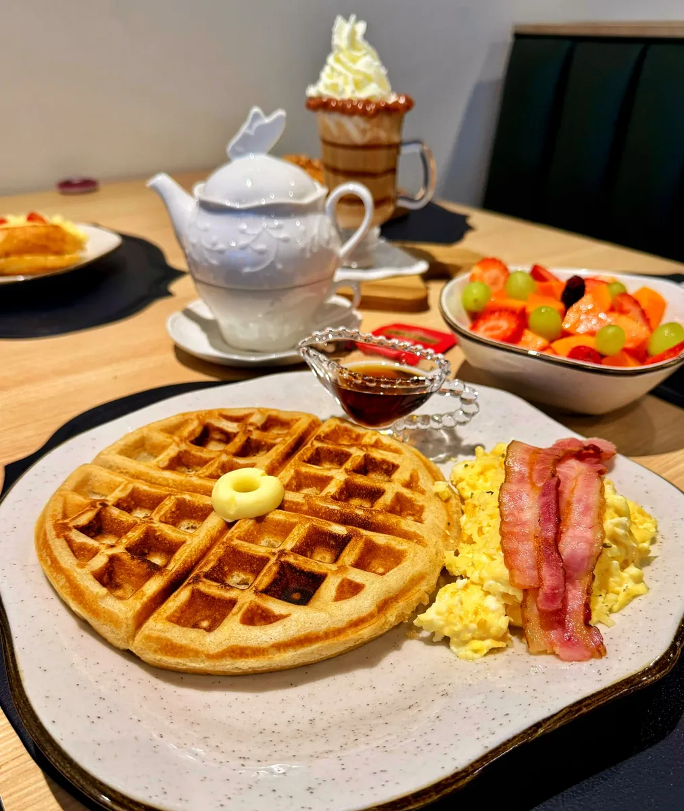

Tempo, cuidado
e sabor de verdade.
Produzido com farinha 100% orgânica e fermentação natural, nosso pão possui baixo índice glicêmico e não gera picos de açúcar no sangue. A longa maturação quebra as proteínas do glúten e altera lactobacilos que produzem ácido lático, melhorando a flora intestinal e garantindo uma digestão leve e saudável.
 Preparo artesanal
Preparo artesanal
 Matéria-prima 100% orgânica
Matéria-prima 100% orgânica
 Baixo índice glicêmico
Baixo índice glicêmico
Uma história
feita no tempo.
A Doctor Pão nasceu porque ela sofria com mal-estar ao comer pães comuns e se juntou
com ele para desenvolver uma opção de fermentação natural com baixo índice glicêmico e
farinha 100% orgânica.
Na hora de escolher o nome, pensaram até em "Sal e Pimenta", mas ela teve o estalo:
"Você é doutor, fica Doctor; eu sou da gastronomia, fica Pão." Assim surgiu a Doctor Pão.
Aquele que respeita o tempo. Nossa fermentação natural.
Nossas especialidades.


